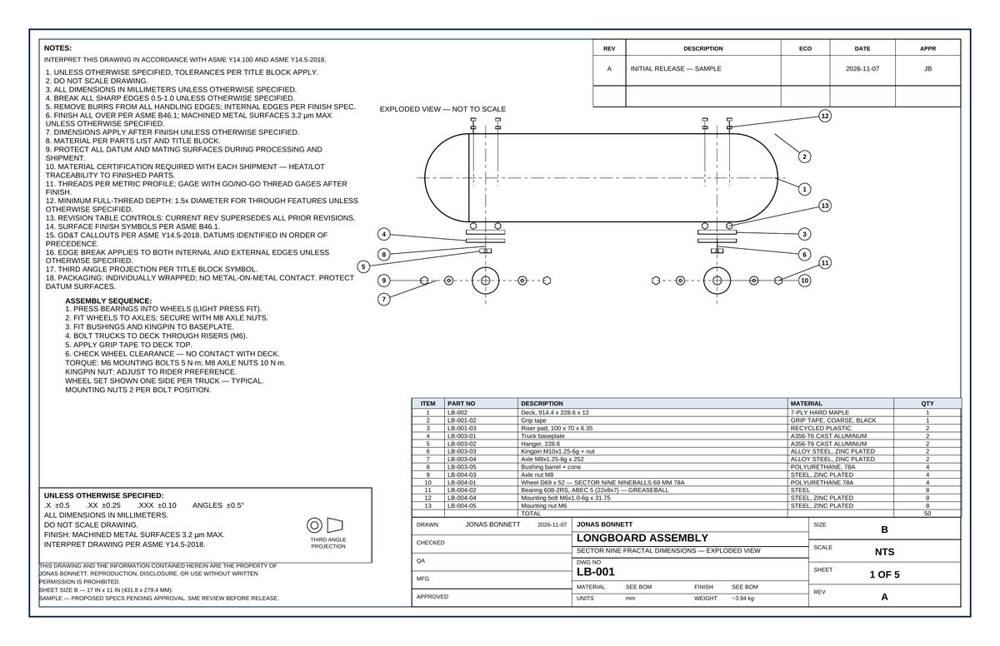

Project · November 2026Scripted CAD — FreeCAD + Python
Author: Jonas Bonnett
Method: Models written as Python scripts, run under FreeCAD’s console (freecadcmd, FreeCAD 1.1.3) — parametric, with STEP AP214 export, STL, DXF, and dimensioned ANSI B drawings
Stack: FreeCAD 1.1.3 · LibreCAD 2.2 · OpenSCAD 2021.01 · KiCad 7.0 · SolveSpace 3.1 · Blender 4.0
Cost: $0 — all open-source, commercial use OK
Result: A revision is a changed number, not a rebuild — the same part, redrawn from code, in seconds
The method
Most CAD work is clicked together in a graphical interface: every dimension typed by hand, every revision a manual rebuild. Jonas Bonnett writes the model as code instead. A Python script defines the part — its dimensions, its pattern, its features — and FreeCAD’s console builds it: solid model, STEP file with named components preserved, STL for printing, DXF flat pattern, and a dimensioned drawing on his ANSI B sheet. Change one number in the script and the whole chain rebuilds. That is the point: the model is a program, and a revision is an edit, not a redo.

The stack — one role each
- FreeCAD 1.1.3 — 3D modeling, TechDraw drawings, STEP / STL / DXF export. The workhorse.
- LibreCAD 2.2 — 2D drafting.
- OpenSCAD 2021.01 — code-first parametric parts.
- KiCad 7.0 — PCB work.
- SolveSpace 3.1 — constraint-based sketching and mechanisms.
- Blender 4.0 — rendering the models so a client can see the part before it exists.
All six are open-source with commercial use OK, and the whole stack costs $0. Two tools are deliberately not used for paid work: Fusion 360 Personal (its license is non-commercial) and Onshape free (public documents only).
Proof 1 — The longboard assembly
A complete 36-inch cruiser longboard, modeled end to end in code: deck, grip tape, risers, baseplates, hangers, kingpins, bushings, axles, wheels, bearings and hardware — 50 components in one FreeCAD assembly, exported as STEP AP214 with named components preserved and verified. The drawing package is five sheets (LB-001 to LB-005) on his Rev B template: assembly exploded view, deck, truck with sections, wheel/bearing/hardware, and a fifth sheet of balloons and parts list. One honest note, printed on the drawings themselves: the truck is modeled single-kingpin while the real Gullwing Sidewinder II is double-kingpin, and the specs are proposed, pending approval — the sheets carry SAMPLE markings and SME-review flags until that closes.

Proof 2 — The freelance parts library
Eleven numbered parts and assemblies, each built by its own script, each shipping as a FreeCAD file plus STEP and STL — the most-requested freelance CAD work, ready to show a client. A few, with volumes verified from the model files:
- 01 — L-bracket with gusset, 60 × 60 × 80 mm, 5 mm wall, 4× Ø8 holes — 43,494.7 mm³
- 02 — PCB enclosure, body 100 × 70 × 45 mm with 4× M3 bosses plus lid — body 57,052.8 mm³
- 03 — Wall cable holder, J-hook — 13,922.9 mm³
- 05 — Phone stand, base 90 × 80 mm, back support tilted 25° — 47,436.1 mm³
- 08 — Hex standoff spacer — 2,691.8 mm³
- 09 — Mounting plate — 53,858.4 mm³
- 06 — Pouch cell holder assembly and 07 — Spray dryer enclosure assembly — built from illustrative dimensions, labeled as such (see Honest limits)
Proof 3 — The CADMASTER starter plate
The smallest proof, and the most useful: a parametric mounting plate, 100 × 60 × 10 mm, with 4× Ø8 holes on an 80 × 40 pattern and a Ø20 center bore. Every dimension is driven by a Parameters spreadsheet — change a value, the model rebuilds, and the 11 associative dimensions on the drawing follow. It is the template every new part starts from: open the starter, save as a new name, change the Parameters, and the drawing stays correct.
Honest limits
FreeCAD is not Creo, and this page does not pretend otherwise. Three limits, stated plainly:
- No one-click auto-dimension in TechDraw. Dimensions are placed deliberately, one at a time — slower to draw, but every dimension is a choice.
- The console DXF exporter drops all text. DXF files are written directly from the SVG instead, so the text survives.
- Two assemblies use illustrative dimensions. The pouch cell holder and spray dryer enclosure were built from a video that gives no dimensions — every number there is a representative sample, not the production design, and the real numbers are flagged for SME verification. The gearbox in the library likewise uses a simplified rectangular tooth profile — representative, not a true involute.
Why it’s here
The through-line of his work is the same everywhere on this site: document the thing, then improve the process that builds the thing. Scripted CAD is that through-line applied to his own tools — the model is a program, the drawing follows the model, and the revision is an edit. It is the same instinct as JDOGG ROCKSTAR, his local AI agent: he builds systems and automates the tools, including his own CAD work.
Skills this demonstrates
Parametric modeling from code, FreeCAD Python scripting and console automation, STEP / STL / DXF interchange with named components intact, dimensioned drawing production to ASME Y14.5, and shipping a zero-cost CAD stack that a client can verify file by file.